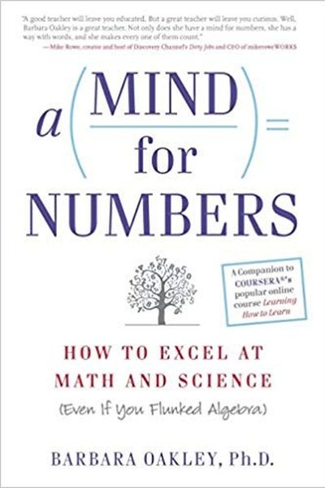

Library › Productivity
A Mind for Numbers — Summary & Key Lessons

How to excel at math and science (even if you flunked algebra) — the learning science of focused vs. diffuse thinking.
📖 OPEN THE FULL INTERACTIVE BREAKDOWN →🌐 Read it in Hindi, Hinglish, Gujarati, Tamil & 22 more languages — free, with audio.
💡 The Big Idea
Barbara Oakley — an engineer who failed math and rebuilt herself from scratch — explains how anyone can learn technical subjects. The brain has two modes: focused (intense attention) and diffuse (relaxed, creative background processing). Mastery alternates between them: focus hard, then take a walk and let the diffuse mode connect the dots. Skills become 'chunks' — compressed neural patterns — through practice and recall. The book also busts the talent myth: struggling with a subject is normal and often necessary.
🧠 The 6 Key Lessons
Lesson 1: Focused vs. Diffuse Mode
Two Modes of Thinking
Your brain has two work modes: focused (tight, intense concentration on one thing) and diffuse (relaxed, background wandering that connects distant ideas). Hard problems need both: focus to load the details, then diffuse mode (walking, showering, sleeping) to assemble the big picture. Forcing focus too long without breaks actually blocks insight.
📖 Example: The 'aha' that arrives in the shower after an hour of struggling is the diffuse mode finishing the work. Great scientists and engineers are famous for walks, not just desks. Read the full example →
⚡ Do this: For your next hard problem: 25 minutes of focused work, then a real break away from the problem — no phone, just diffuse time.
Lesson 2: Chunking: Build the Building Blocks
Chunking
Chunking compresses a set of related ideas into one mental unit — like a chord on piano or a formula in physics. Build chunks by: focusing on the concept, practicing with it (not just reading), and connecting it to what you already know. Once chunked, a complex idea becomes a single, easy-to-grasp piece.
📖 Example: A chess master sees a position as a few familiar patterns (chunks) where a beginner sees 30 separate pieces. The expert's chunks free up mental space. Read the full example →
⚡ Do this: Pick one concept you're learning and practice it until you can 'see' it as one unit — then connect it to two related ideas.
Lesson 3: Recall Beats Rereading
Recall
The best way to learn is to look away and recall: close the book and try to remember the idea. Retrieval strengthens memory and reveals what you don't know. Rereading feels productive but builds fluency without understanding — the illusion of competence.
📖 Example: Oakley's students who tested themselves after reading outperformed those who reread the chapter twice. The effort of recall, even when failing, is what builds the neural trace. Read the full example →
⚡ Do this: After every study block, close the material and write down everything you remember. Reopen only to check the gaps.
Lesson 4: Interleaving: Mix It Up
Interleaving
Instead of practicing one type of problem until mastered, mix different types together. Interleaving forces your brain to choose the right approach — which is what real tests and real life demand. It feels harder and slower, which is exactly why it works better.
📖 Example: Students who studied mixed math problems (interleaved) scored dramatically better on tests than those who drilled one type at a time — despite feeling less confident while learning. Read the full example →
⚡ Do this: In your next practice session, mix two or three problem types or topics instead of mastering one at a time.
Lesson 5: Beat Procrastination With the Pomodoro
Overcoming Procrastination
Procrastination is emotional avoidance — and the antidote is a small start. Use the Pomodoro: 25 minutes of focused work with no distractions, then a 5-minute break. The timer makes starting easy, and starting builds momentum. Focus on process (time spent) not product (outcome) to bypass the anxiety.
📖 Example: Oakley describes students who couldn't start studying until they promised themselves just one 25-minute session — and then found themselves continuing. The small start defeats the avoidance. Read the full example →
⚡ Do this: Set a 25-minute timer right now and work on your hardest task with full focus. After it rings, take a 5-minute break.
Lesson 6: Einstellung: Your Existing Mind Can Trap You
Einstellung
Einstellung is the tendency to get stuck in your first approach — your existing neural pattern blocks better solutions. When you're stuck, your initial ideas may literally be blocking the answer. Step back, look at the problem from scratch, or take a break to clear the rut.
📖 Example: In classic experiments, people kept using the first method they learned even when a simpler one existed right in front of them. The fix: deliberately question your starting approach. Read the full example →
⚡ Do this: Next time you're stuck on a problem, write down your approach, then list two completely different ways it could be solved.
✅ 5-Step Action Plan
- Alternate focused sprints with diffuse-mode breaks.
- Practice one concept until it becomes a chunk.
- Test yourself after every study session — no rereading.
- Interleave different problem types.
- Use the 25-minute timer to defeat procrastination.
⚠️ When This Doesn't Work
Oakley's 'use focused and diffuse modes, chunk the material' is the best learning-science book ever — and Takata is the warning that understanding the material is not the same as understanding the consequences: the engineers who designed the fatal airbag inflators understood the chemistry perfectly — they could teach it, model it, chunk it — and they still shipped a product that killed people, because the numbers they mastered were the ones that served the cost target. Learning the subject well is necessary; learning what the subject is FOR is the part the book underweights. Master the math, and master the ethics of the math.
💀 The Graveyard Proves It
💥 Takata — The Airbag Maker That Hid Its Own Explosions. Burn: 100M recalls; largest auto recall ever; bankruptcy. Read the full case study →
💬 Best Quotes from A Mind for Numbers
- “Focused mode is for practicing; diffuse mode is for creating.”
- “Chunking is the mental leap that helps you unite bits of information through meaning.”
- “If you find yourself procrastinating, you're avoiding something that makes you feel stupid — the answer is to start small.”
Interactive version: mark lessons as read, listen in your language, share quote cards.